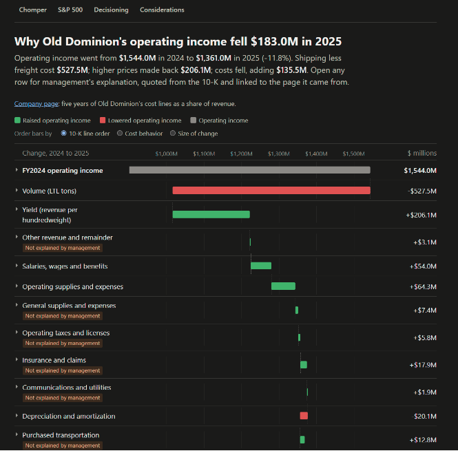

chomper
Live: https://jamesishere.github.io/chomper/

What is on the site
- The front page lists the S&P 500 by sector and sub-industry and says, for every company, whether its filings can be read yet and why not when they cannot.
- A company page (eleven so far) shows revenue, pre-tax income and margin by year since 2007, with recessions shaded and acquisitions and accounting changes marked, then five years of the income statement line by line as a share of revenue.
- Old Dominion Freight Line's one-year bridge walks operating income from fiscal 2024 to 2025. Each bar opens to management's explanation, quoted verbatim from the 10-K and linked to the sentence it came from. Where the 10-K does not account for a change, the bar says so.
- The S&P 500 page adds the index up: revenue and costs for the members as they were each year against today's members traced back, with a page of who was a member each month.
- Decisioning records every decision behind the numbers, with dates. Considerations records what is unsure or unfinished, and what would make it due.
How it was built
Every number comes from the SEC. The scripts read each 10-K's own XBRL, keep the filing's labels and line order, and stop unless every year foots to the pre-tax income the company reported. Where the SEC's structured data does not reach (the earliest years for some companies, a few acquisitions), a figure is read by hand from the filing, with the sentence it came from quoted beside it. A disagreement between two sources is recorded as a disagreement, never averaged away.
The words on the bridge page were drafted by a language model, run from the command line on a subscription rather than an API, from the filing's MD&A and the computed bars. Code then checks every quote verbatim against the filing and every number in the draft against the bridge, and I review and approve the result before the page is built. The page build never calls a model, and the "not explained by management" flags come from arithmetic, not from the model.
To rebuild every page from the committed data, with no network and no model:
python rebuild.py
The reading scripts (pull.py, history.py, headline.py, universe.py, aggregate.py, membership.py) fetch from the SEC and Wikipedia and need a .env file with SEC_USER_AGENT="Your Name you@example.com", which the SEC requires.
Status
Version 1, November 2026: one bridge, eleven company pages, the index pages. Four company pages stop at fiscal 2016 and say so. Next is a cost measure for every company, how far costs fall when revenue falls, and the working sample to test it on. The open items are on the Considerations page; parked ideas are in ideas.md.